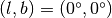
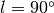
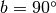
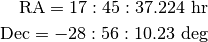

Galactocentric¶
-
class
astropy.coordinates.Galactocentric(*args, **kwargs) [edit on github][source]¶ Bases:
astropy.coordinates.BaseCoordinateFrameA coordinate or frame in the Galactocentric system. This frame requires specifying the Sun-Galactic center distance, and optionally the height of the Sun above the Galactic midplane.
The position of the Sun is assumed to be on the x axis of the final, right-handed system. That is, the x axis points from the position of the Sun projected to the Galactic midplane to the Galactic center – roughly towards . For the default transformation (), the y axis points roughly towards Galactic longitude , and the z axis points roughly towards the North Galactic Pole ().
The default position of the Galactic Center in ICRS coordinates is taken from Reid et al. 2004, http://adsabs.harvard.edu/abs/2004ApJ...616..872R.

The default distance to the Galactic Center is 8.3 kpc, e.g., Gillessen et al. 2009, http://adsabs.harvard.edu/abs/2009ApJ...692.1075G.
The default height of the Sun above the Galactic midplane is taken to be 27 pc, as measured by http://adsabs.harvard.edu/abs/2001ApJ...553..184C.
For a more detailed look at the math behind this transformation, see the document Description of Galactocentric coordinates transformation.
Parameters: representation :
BaseRepresentationor NoneA representation object or None to have no data (or use the other keywords)
galcen_distance :
Quantity, optional, must be keywordThe distance from the Sun to the Galactic center.
galcen_ra :
Angle, optional, must be keywordThe Right Ascension (RA) of the Galactic center in the ICRS frame.
galcen_dec :
Angle, optional, must be keywordThe Declination (Dec) of the Galactic center in the ICRS frame.
z_sun :
Quantity, optional, must be keywordThe distance from the Sun to the Galactic midplane.
roll :
Angle, optional, must be keywordThe angle to rotate about the final x-axis, relative to the orientation for Galactic. For example, if this roll angle is 0, the final x-z plane will align with the Galactic coordinates x-z plane. Unless you really know what this means, you probably should not change this!
Examples
To transform to the Galactocentric frame with the default frame attributes, pass the uninstantiated class name to the
transform_to()method of a coordinate frame orSkyCoordobject:>>> import astropy.units as u >>> import astropy.coordinates as coord >>> c = coord.ICRS(ra=[158.3122, 24.5] * u.degree, ... dec=[-17.3, 81.52] * u.degree, ... distance=[11.5, 24.12] * u.kpc) >>> c.transform_to(coord.Galactocentric) <Galactocentric Coordinate (galcen_distance=8.3 kpc, galcen_ra=266d24m18.36s, galcen_dec=-28d56m10.23s, z_sun=27.0 pc, roll=0.0 deg): (x, y, z) in kpc [(-9.6083818980977, -9.400621883358546, 6.520560663896347), (-21.283023068029138, 18.763340128812384, 7.846938548636718)]>
To specify a custom set of parameters, you have to include extra keyword arguments when initializing the Galactocentric frame object:
>>> c.transform_to(coord.Galactocentric(galcen_distance=8.1*u.kpc)) <Galactocentric Coordinate (galcen_distance=8.1 kpc, galcen_ra=266d24m18.36s, galcen_dec=-28d56m10.23s, z_sun=27.0 pc, roll=0.0 deg): (x, y, z) in kpc [(-9.407859235565343, -9.400621883358546, 6.520665737962164), (-21.08239383088295, 18.763340128812384, 7.84798134569032)]>
Similarly, transforming from the Galactocentric frame to another coordinate frame:
>>> c = coord.Galactocentric(x=[-8.3, 4.5] * u.kpc, ... y=[0., 81.52] * u.kpc, ... z=[0.027, 24.12] * u.kpc) >>> c.transform_to(coord.ICRS) <ICRS Coordinate: (ra, dec, distance) in (deg, deg, kpc) [(86.22349058727241, 28.8389413808627, 4.391577882957292e-05), (289.6680265194508, 49.88763881149547, 85.96407345372828)]>
Or, with custom specification of the Galactic center:
>>> c = coord.Galactocentric(x=[-8.0, 4.5] * u.kpc, ... y=[0., 81.52] * u.kpc, ... z=[21.0, 24120.0] * u.pc, ... z_sun=21 * u.pc, galcen_distance=8. * u.kpc) >>> c.transform_to(coord.ICRS) <ICRS Coordinate: (ra, dec, distance) in (deg, deg, kpc) [(86.25852490164378, 28.85773187391088, 2.7562547481200286e-05), (289.77285254989323, 50.062904565432014, 85.92160096237191)]>
Attributes Summary
default_representationframe_attributesframe_specific_representation_infogalcen_decgalcen_distancegalcen_ranamerollz_sunMethods Summary
get_roll0()The additional roll angle (about the final x axis) necessary to align the final z axis to match the Galactic yz-plane. Attributes Documentation
-
default_representation¶
-
frame_attributes= OrderedDict([('galcen_distance', <astropy.coordinates.baseframe.FrameAttribute object at 0x10aea6748>), ('galcen_ra', <astropy.coordinates.baseframe.FrameAttribute object at 0x10aea6780>), ('galcen_dec', <astropy.coordinates.baseframe.FrameAttribute object at 0x10aea6898>), ('z_sun', <astropy.coordinates.baseframe.FrameAttribute object at 0x10aea69b0>), ('roll', <astropy.coordinates.baseframe.FrameAttribute object at 0x10aea6ac8>)])¶
-
frame_specific_representation_info¶
-
galcen_dec= <Angle -28.936175 deg>¶
-
galcen_distance= <Quantity 8.3 kpc>¶
-
galcen_ra= <Angle 266.4051 deg>¶
-
name= 'galactocentric'¶
-
roll= <Quantity 0.0 deg>¶
-
z_sun= <Quantity 27.0 pc>¶
Methods Documentation
-
classmethod
get_roll0() [edit on github][source]¶ The additional roll angle (about the final x axis) necessary to align the final z axis to match the Galactic yz-plane. Setting the
rollframe attribute to -this method’s return value removes this rotation, allowing the use of theGalactocentricframe in more general contexts.
-